VS-05. Bomba volcánica básica
| 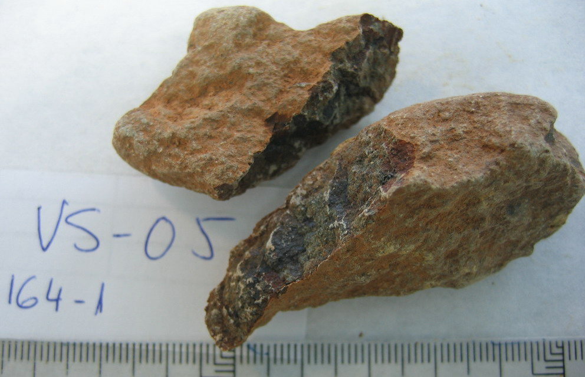 | Colores: |
Rojizo teja con interior verde negruzco |
Color: |
- Verde negruzco (interior): 5Y3/2, Gris oliva oscuro - Rojo teja: 5YR6/8, Amarillo rojizo |
||
|
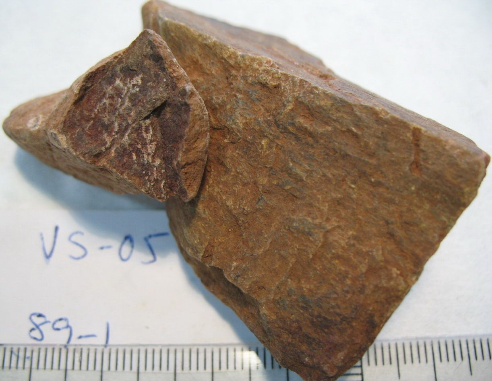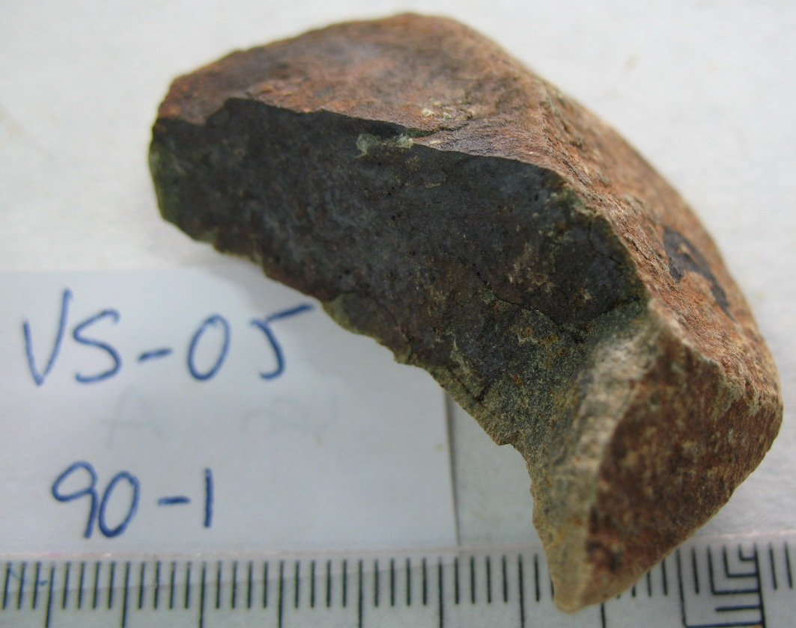
|
||||||
| Color raya: | Blanco | |||||
| Grano: | Fino | |||||
| Dureza: | Navaja | |||||
| Friabilidad : | No friable | |||||
| Forma: | Angular | |||||
| Exfoliación: | No exfoliable | |||||
| Esquistosidad: | No apreciable | |||||
| Tacto: | Áspero (no granular) | |||||
| Densidad: | 2,7 g/ml | |||||
| HCl 20%: | No | |||||
|
Observaciones: Roca pesada con un fuerte contraste de color del interior al exterior. Aparecida en superficie de VS-04. Muestras guardadas: 959-90 (1), 959-164 (1), 959-89 (1) |
|
GL |
Frecuencia |
Litolofacies: |
| 740 | 2 | Lavas y tobas básicas espilíticas |
| 1840 | 1 | Gabro - diabasas |
|
Litofacies secundarias: |
VS-06. Tufita o pizarra filítica gris
| 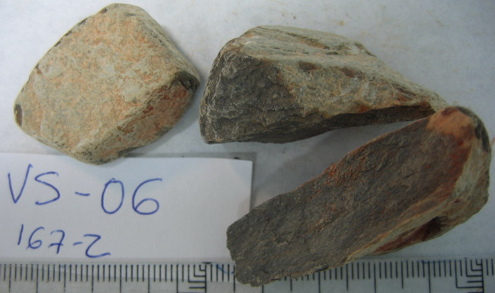 | Colores: |
Gris claro; rojizo (superficie), con interior gris oscuro |
Color: |
- Rojo (superficie): 2.5YR5/8, Rojo - Gris claro: 10YR8/4, Marrón muy pálido - Gris oscuro(interior): N4/, Gris oscuro |
||
| Color raya: | Gris claro | |||||
| Grano: | Muy fino | |||||
| Dureza: | Uña + | |||||
| Friabilidad : | Escasa | |||||
| Forma: | Plana | |||||
| Exfoliación: | Irregular (tipo pizarra) difícil | |||||
| Esquistosidad: | Apreciable | |||||
| Tacto: | Suave, sericítico (mancha) | |||||
| Densidad: | 2,475 g/ml | |||||
|
HCl 20%: |
No | |||||
| Observaciones: Aspecto exterior gris verdoso claro, con tinciones pardo rojizas, con un gris oscuro y contrastado dentro. Partículas finas y bien estratificadas. Cambia de colores claros a gris oscuro (el de dentro) al mojarse en la superficie. Las gravillas dejan de ser gris en el interior y por meteorización pasan a rojizos. La densidad varía entre 2,4 y 2,55 g/ml. Muestras guardadas: 959-167 (1 y 2) |
|
GL |
Frecuencia |
Litolofacies: |
| 2040 | 2 | Pizarras, tufitas y tobas |
|
Litofacies secundarias: |
VS-07. Toba o tufita verdosa blanda
| 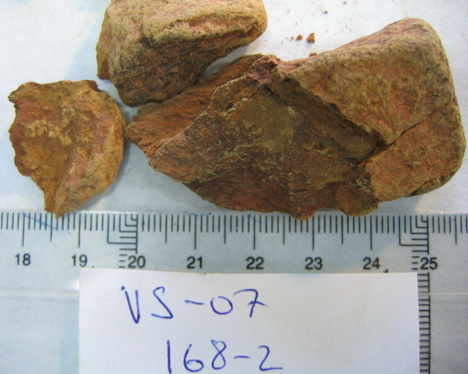 | Colores: |
Pardo verdoso; pardo rojizo muy oscuro; pardo rojizo (tinciones) |
Color: |
- Pardo rojizo muy oscuro: 10YR3/1, Gris muy oscuro - Pardo verdoso: 10YR6/8, Amarillo parduzco - Pardo rojizo (tinciones): 2.5YR6/6, Rojo claro |
||
| Color raya: | Pardo rosáceo claro | |||||
| Grano: | Muy fino | |||||
| Dureza: | Uña + |
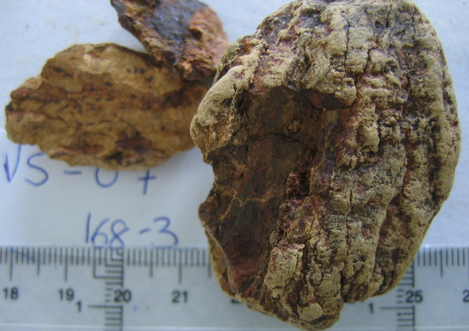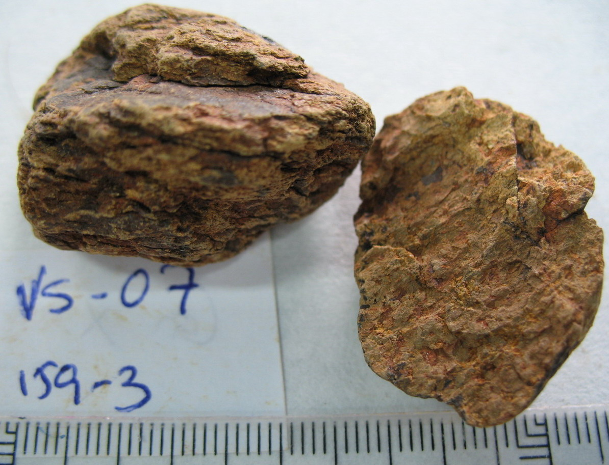 |
||||
| Friabilidad : | Media | |||||
| Forma: | Subangular | |||||
| Exfoliación: | Irregular (tipo pizarra) fácil | |||||
| Esquistosidad: | Apreciable | |||||
| Tacto: | Granular fino | |||||
| Densidad: | 2,4 g/ml | |||||
|
HCl 20%: |
No | |||||
| Observaciones: Roca muy cercana a VS-04, pero menos verdosa y algo más blanda. En algunas partes la dureza: uña. Muestras guardadas: 959-168 (2, 3), 959-159 (3) |
|
GL |
Frecuencia |
Litolofacies: |
| 740 | 6 | Lavas y tobas básicas espilíticas |
| 2060 | 3 | Pizarras, tufitas y tobas |
|
Litofacies secundarias: |
||
| 8400 | 1 |
Jaspes con manganeso y "cherts" |
VS-08. Cuarcita-muscovita, PQ (Tufita cuarzosa esquistosa)
| 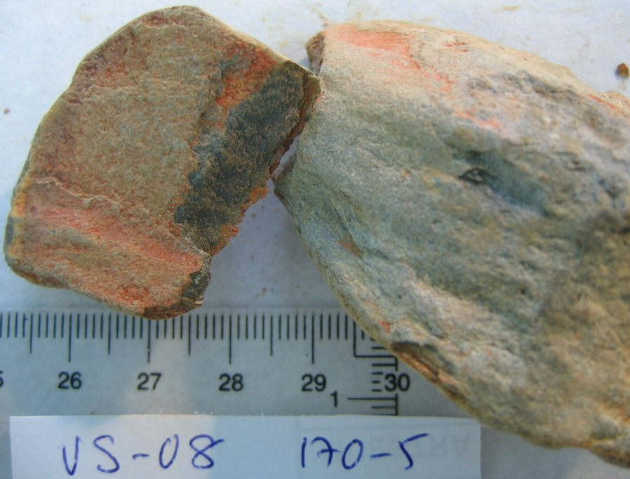 | Colores: |
Rojo óxido; pardo-claro-verdoso; grisáceo dentro |
Color: |
- Pardo-claro-verdoso: 2.5Y8/4, Amarillo pálido - Rojo óxido: 2.5YR5/8, Rojo - Gris (interior): 2.5Y4/1, Gris oscuro |
||
| Color raya: | Gris claro | |||||
| Grano: | Fino | |||||
| Dureza: | Vidrio |
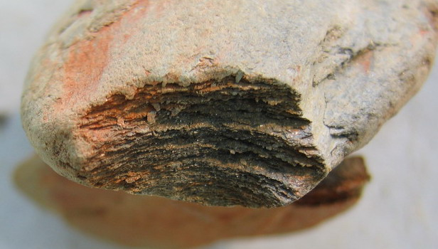 |
||||
| Friabilidad : | No friable | |||||
| Forma: | Plana | |||||
| Exfoliación: | Irregular (tipo pizarra) difíci | |||||
| Esquistosidad: | Apreciable | |||||
| Tacto: | Granular fino | |||||
| Densidad: | 2,595 g/ml | |||||
|
HCl 20%: |
No | |||||
| 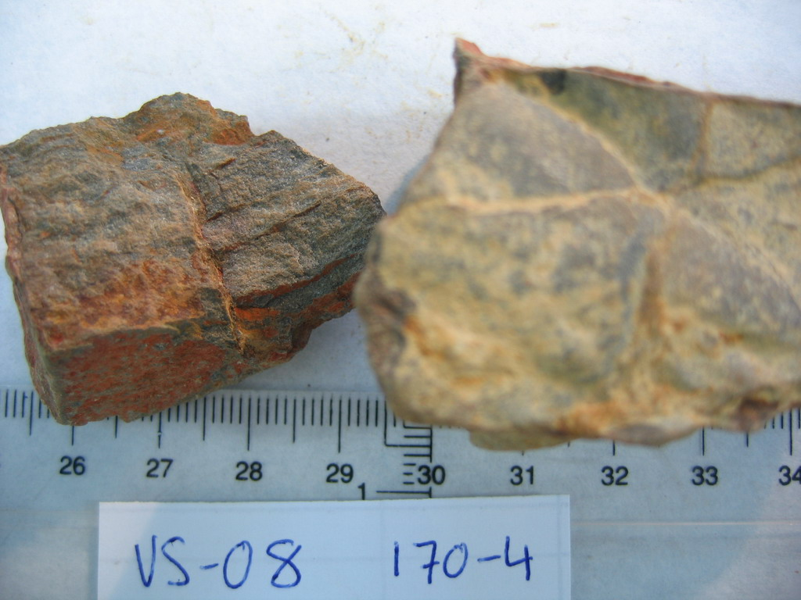 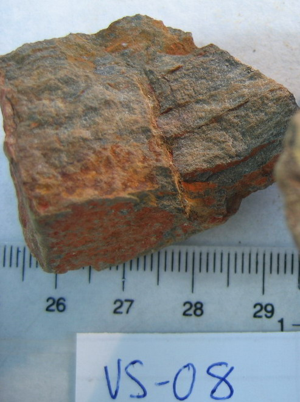 | |
| Observaciones: No estoy seguro de si se trata de una arenisca esquistosa o una tufita con mucho cuarzo. Se aprecia el brillo de cristalitos, tal vez cuarzo. En algunas partes dureza: navaja. La densidad varía entre 2,55 y 2,64 g/ml. Muestras guardadas: 959-170 (4 y 5) |
|
GL |
Frecuencia |
Litolofacies: |
| 1340 | 4 | Pizarras, areniscas y cuarcitas |
|
Litofacies secundarias: |
||
| 1340 | 2 | Pizarras, areniscas, cuarcitas con tufitas locales |